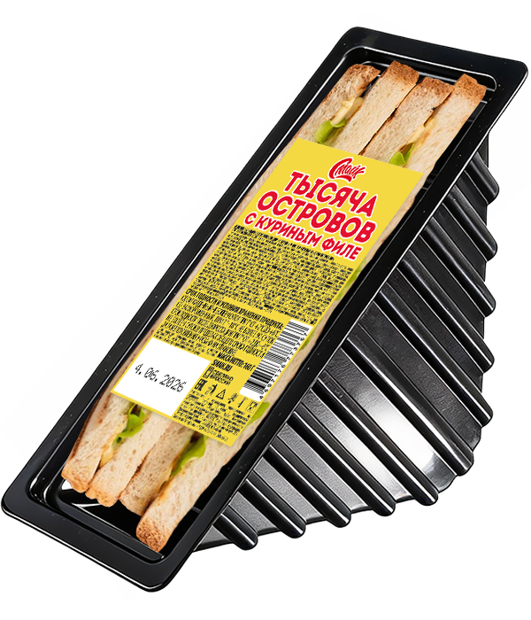

Сэндвич с куриным филе и соусом Тысяча островов

Состав:
тостовый хлеб, филе куриное, соус 1000 островов, сыр.
Масса нетто:
160 г.
Пищевая и энергетическая ценность в 100 г продукта (средние значения):
Белки
– 11,7 г.
Жиры
– 18,2 г.
Углеводы
– 25,3 г.
Калорийность
– 320 ккал / 1330 кДж.
Закрыть окно